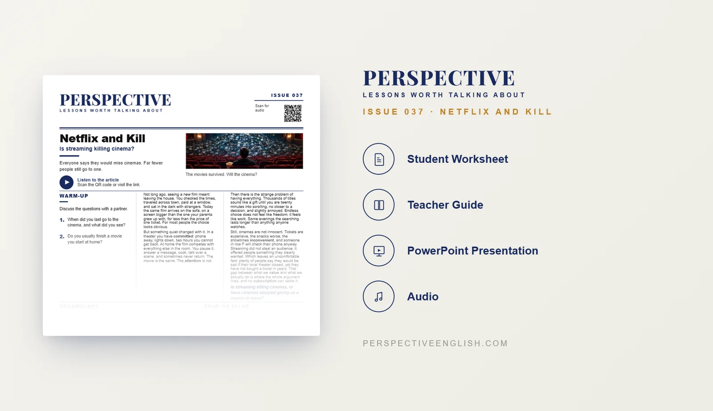

ISSUE 037
Streaming & Cinema ESL Lesson
Is streaming killing cinema?
A ready-to-teach ESL lesson exploring streaming, cinema, movie habits, choice overload, attention and the future of the big screen, with reading, listening, vocabulary, discussion and critical-thinking activities for B1–B2 English learners.
CHOOSE YOUR LEVEL
Collection 07 includes Issues 036–040.

LESSON PREVIEW

ABOUT THIS LESSON
About This Streaming & Cinema ESL Lesson
Going to the cinema used to be one of the main ways to see a new movie. Today, streaming puts thousands of films on the sofa, often for less than the price of a single cinema ticket.
This B1–B2 Streaming & Cinema ESL lesson explores what that convenience has changed. Students consider attention, choice overload, rising cinema costs, home viewing habits and the gap between saying we value cinemas and actually paying to visit them.
The lesson combines an original reading and audio with vocabulary, comprehension, discussion and critical-thinking activities. Students redesign a struggling local cinema with a limited budget, calculate the final ticket price, pitch their idea and decide whether they would genuinely pay to go instead of staying home.
FROM THE ARTICLE
WHAT'S INCLUDED
What's Included in Netflix and Kill?
- Magazine-style B1–B2 ESL student worksheet
- Original “Netflix and Kill” reading and accompanying audio recording
- Five vocabulary matching questions and five true-or-false comprehension questions
- Five discussion questions about watching films at home, choice overload, attention and the future of cinemas
- Save the Cinema critical-thinking challenge: redesign a struggling local cinema with a 10-point budget
- Cinema upgrades and ticket-price calculation, starting at $12
- Language in Context: five sentences using vocabulary from the article
- One-minute speaking challenge: pitch your redesigned cinema and explain what streaming cannot copy
- 150–200 word opinion writing task on whether streaming or cinemas themselves are responsible for declining attendance
- Teacher guide, complete answer key and model writing
- Ready-to-use classroom presentation
GET THE COMPLETE LESSON
Ready to Teach Netflix and Kill?
Get the complete Streaming & Cinema ESL lesson individually, or save with Perspective Collection 07 featuring Issues 036–040.
Secure checkout and instant digital delivery through Payhip.